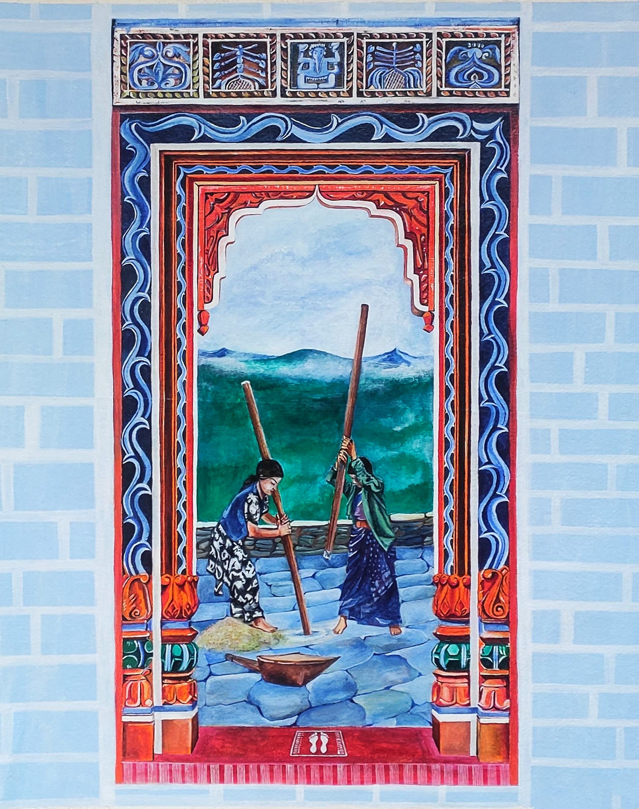

Uttarakhand wall art feels like homes speaking through color and pattern. These paintings are not made for galleries—they live on walls, quietly becoming part of everyday life. The romance here is warm and homely. It reflects a deep connection between people and their surroundings. The motifs—flowers, animals, and symbols—turn simple houses into spaces filled with life, protection, and positivity. It’s like wrapping your home in art and meaning.
Uttarakhand wall art comes from the Kumaon and Garhwal regions. • Practiced for generations in rural households • Created during festivals, marriages, and rituals • Closely linked with traditions like Aipan art These paintings were not just decorative—they were believed to: • Bring good luck and prosperity • Protect the household • Mark important occasions
This art form is simple yet meaningful: • Natural Materials • Mud walls as base • Colors from natural pigments • Hand-Painted Designs Done using fingers or simple tools • Common Motifs • Flowers and plants → growth • Animals and birds → nature • Geometric patterns → balance • Flat, Decorative Style No realism—focus on symbolism • Integration with Architecture Art becomes part of the house itself
Uttarakhand wall art is created by women in households. • Passed through generations informally • Learned by observation and practice • Not a profession, but part of daily and cultural life This makes it a living tradition, not just an art style.